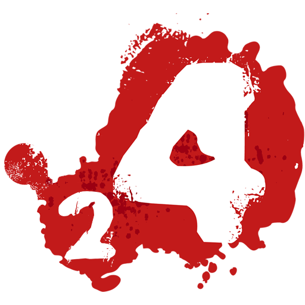

<nz-layout class="app-layout">
  <nz-sider class="menu-sidebar" nzCollapsible nzWidth="256px" nzBreakpoint="md" [(nzCollapsed)]="isCollapsed"
    [nzTrigger]="null">
    <div class="sidebar-logo">
      <a href="/" target="_blank">
        
        <h1>Torneio L4D2</h1>
      </a>
    </div>
    <ul nz-menu nzTheme="dark" nzMode="inline" [nzInlineCollapsed]="isCollapsed">
      <li nz-submenu nzOpen nzTitle="Cadastros" nzIcon="form">
        <ul>
          <li nz-menu-item nzMatchRouter>
            <a href="/cadastros/jogadores">Jogadores</a>
          </li>
          <li nz-menu-item nzMatchRouter>
            <a href="/cadastros/times">Times</a>
          </li>
        </ul>
      </li>
    </ul>
  </nz-sider>
  <nz-layout>
    <nz-header>
      <div class="app-header">
        <span class="header-trigger" (click)="isCollapsed = !isCollapsed">
          <i class="trigger" nz-icon [nzType]="isCollapsed ? 'menu-unfold' : 'menu-fold'"></i>
        </span>
      </div>
    </nz-header>
    <nz-content>
      <div class="inner-content" style="overflow-y: auto;">
        <router-outlet></router-outlet>
      </div>
    </nz-content>
  </nz-layout>
</nz-layout>